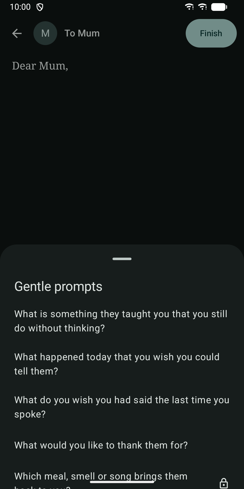
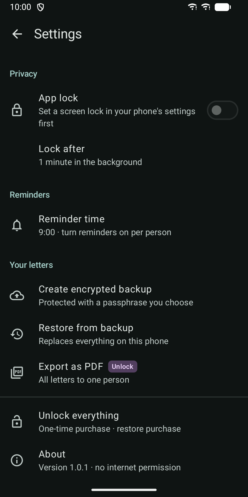

Trauerbrief-Tagebuch
Schreibe ungesendete Briefe an Verstorbene. Privat und verschlüsselt.





Über die App
Schreibe die Briefe, die du nicht mehr senden konntest. Das Trauerbrief-Tagebuch ist ein ruhiger, privater Ort für ungesendete Briefe an Eltern, Partner, Kind, Geschwister, Freunde oder ein Haustier, die du verloren hast. Jeder Brief beginnt mit „Liebe/r [Name]“, speichert sich beim Schreiben selbst und bleibt nur auf deinem Handy. Die App hat keine Internetberechtigung und kann deine Briefe deshalb nirgendwohin senden. Es gibt kein Konto, keine Cloud, kein Tracking und keine KI. Schreibe in deinem eigenen Tempo - Lege den Menschen an, den du vermisst, mit Beziehung und, wenn du möchtest, Geburtstag und Todestag. - Füge bei Wunsch ein Foto hinzu. Es wird im Kreis zugeschnitten und verschlüsselt gespeichert, Standort- und Kameradaten werden entfernt. - Ein schlichter, ruhiger Editor, der automatisch speichert. - Sanfte, freiwillige Schreibanregungen für jede Beziehung. Haustiere haben eigene Anregungen. - Keine Serien, keine Zähler, kein Druck. Komm zurück, wann du magst. Beende jeden Brief auf deine Weise - Behalten: Der Brief bleibt in deinem Tagebuch und du kannst weiterschreiben. - Versiegeln: Er wird schreibgeschützt. Du kannst ihn später wieder öffnen. - Loslassen: Nach deiner Bestätigung wird er endgültig gelöscht. Privat von Grund auf - Alles liegt in einer verschlüsselten Datenbank. Der Schlüssel wird von der Sicherheitshardware deines Handys geschützt. - Optionale App-Sperre mit Fingerabdruck, Gesicht oder Geräte-PIN. Solange sie aktiv ist, sind Screenshots und die Vorschau in der App-Übersicht blockiert. - Erinnerungen an Geburts- und Todestage sind standardmäßig aus. Wenn aktiv, lautet die Benachrichtigung nur „Ein Moment für dich“, ohne Namen oder Datum, und sie ist auf dem Sperrbildschirm verborgen. - Das Widget zeigt nie Brieftext. Bei aktiver App-Sperre zeigt es nur eine schlichte Schaltfläche „Schreiben“. - Verschlüsselte Backups mit einer Passphrase deiner Wahl, gespeichert, wo du möchtest. Stelle sie auf einem neuen Handy wieder her. Was enthalten ist - Von Anfang an verfügbar: eine Person, einfache Anregungen, Erinnerungen, App-Sperre sowie verschlüsseltes Backup und Wiederherstellung. - Mit der einmaligen Freischaltung in der App: mehr als eine Person, alle Anregungen und PDF-Export eines Briefes oder aller Briefe an eine Person. Es ist kein Abo. Der Kauf wird von der Google-Play-Store-App geprüft. Das Trauerbrief-Tagebuch selbst hat weiterhin keine Internetberechtigung. Diese App ersetzt keine professionelle Unterstützung. Wenn es dir schlecht geht, wende dich bitte an eine Vertrauensperson oder eine Beratungsstelle in deiner Nähe.